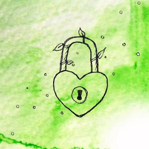

Secure Your Passwords
Passwords are by far the most important aspect of online security, but they're also the most annoying. When every website, app, and device wants a password, it can be difficult to remember each and every password. So we recycle passwords across accounts, we use easily memorable combinations of words and numbers, and sometimes we even write them down.
The majority of passwords are very easy to hack by both humans and computers. A controlling partner may be able to guess which words you might use in a password, or if they know one of your passwords, they may easily figure out others. Writing down your passwords, either on a piece of paper or in a text document, means anyone with access to your personal space can read them. Hacking software, used by hackers and trolls, can try millions of passwords until it guesses the correct password. The best way to secure your passwords are to use strong, unique passphrases.
A good password consists of three or four completely random words. Here are some examples:
- OrangeLobsterIceCream
- GrassyVendingMachine
- OceanLightbulbFactory
Because we can have dozens, even hundreds of passwords, it's unrealistic to remember that many unique passwords. The most effective solution for consistently secure passwords is to use a Password Manager. A Password Manager is software that automatically generates strong passwords for you and stores them in a "vault", so no-one can access them but you. It may sound insecure to have all of your passwords in one place, but the software strongly encrypts every password, so no human or computer can hack them. One of the most useful features are browser extensions that can automatically fill-in your password on login forms: you never have to memorize a password again! The only security measure you need to take is having a strong, unique passphrase for the password manager itself. It's also important to enable TWOFACTOR AUTHENTICATION, another one of our defense strategies.
We recommend using the LastPass Password Manager. There is a free version available, which you can upgrade to a premium version if you want more features. If you have a controlling partner who will demand access to your password manager, consider relying on strong, unique passphrases instead. Password managers are most effective when only you can access the software.
By using a strong, unique passphrase as your password, or by employing a password manager, you can ensure that your online accounts stay safe. You don't have to change every password at once: go at your own pace, get comfortable with these new strategies, and enjoy your newfound security.